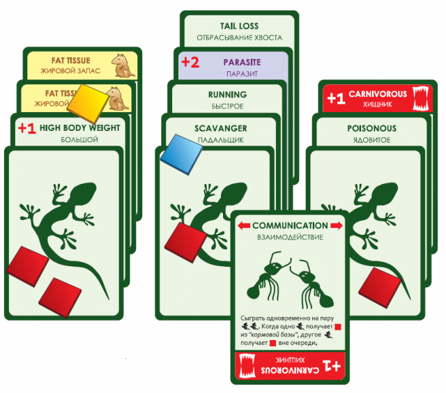

Evolution - a board game based on Darwin's theory
The game was created candidate of biological sciences in 2010, and part of the series "The right game." In 2011 he published in English, French and German. The game has been recognized as the best game of 2010, many Russian gaming portals and became known also outside of Russia.
The game is divided into passages, continuing until the end of the main cards in the deck. Each turn players receive cards (determined by the number of animals available to them), and can create new animals or add new qualities they already have animals. Next, the number of chips meal, based on the number of players and the die roll. During the next phase of the players one at a time can perform one of the actions of their animals - take "food" or attack another animal, and if successful, to take more food. After this phase, unfed animals die.

The main phases of the game
- phase of development
- phase determination of prey
- phase power supply
- phase of extinction and getting new cards
End of the game
Last move begins when the deck run out of cards. After a phase of extinction of the game ends and starts scoring. Each player receives:
- 2 points for each of his surviving animal;
- 1 point for each property of the surviving animals;
- extra points for those properties that require more food to feed the animal, "Carnivorous" and "High body weight" one point; "Parasite" 2 points
An equal number of points the player with a large number of cards in the demolition.
Supplements
There are several official additions to the game:
- Evolution: Time to Fly
- Continents